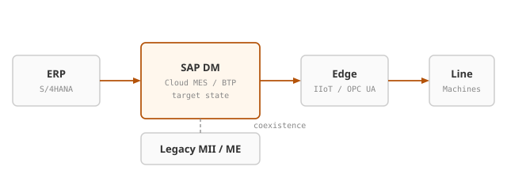
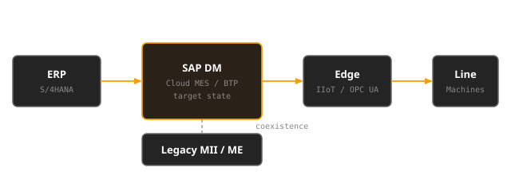
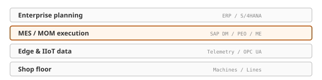
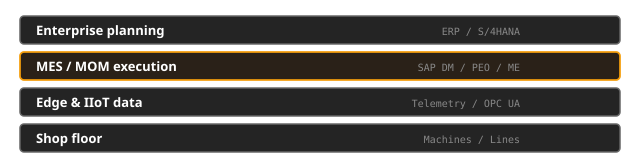

Specialized implementation
Configure and deploy SAP Digital Manufacturing, PEO, and BTP for production — including ME/MII transition programs with continuity of the line as a non-negotiable.
Dhiphos builds manufacturing software for the shop floor. We help plants move from SAP ME and MII to SAP Digital Manufacturing, SAP BTP, or both — chosen by how standard or custom your landscape is.
SAP has confirmed that ME and MII version 15.5 is the final release. Mainstream maintenance ends in 2027; extended support runs through 31 December 2030. SAP Digital Manufacturing is the strategic cloud MES successor. The transition is not a like-for-like upgrade — it is a redesign decision you still control if you start now.
The right landing zone depends on your footprint. Mostly standard MES work usually maps to SAP Digital Manufacturing. Heavily custom MII applications often rebuild on SAP BTP. Mixed plants commonly need both.
Fit-gap decides the split — how standard versus custom the existing application is — before you commit to a target architecture.
Mostly standard
When ME/MII is used mainly for MES/MOM execution — orders, WIP, routing, quality, operator guidance — map to SAP Digital Manufacturing as the cloud MES successor (aligned with SAP’s Customer Evolution Kit).
Best when plants can adopt standard DM capabilities with configuration rather than rewriting plant-specific code.
Heavily custom
When MII was primarily a custom application platform — plant-specific UIs, bespoke transactions, composition logic that does not map to DM standards — rebuild on SAP BTP (CAP, Integration Suite, Event Mesh, UI5).
Best when the value sits in your custom apps, not in standard MES features.
Mixed landscape
The most common outcome: standard execution on DM, extensions and heavy custom logic on BTP, with phased coexistence until each plant is ready.
Fit-gap splits what becomes DM configuration, what becomes BTP services, and what stays temporarily on legacy ME/MII.
We do not recommend a big-bang cutover. Legacy ME/MII runs alongside the chosen target until a pilot line proves the model — whether that target is DM, BTP applications, or both.


No further ME/MII feature releases. Innovation moves to SAP Digital Manufacturing on BTP.
Plan transformation while specialist capacity and project calendars are still under your control.
Limited, premium maintenance only. Waiting until late in the window raises cost and cutover risk.
No. Standard MES footprints usually go to DM. Heavy custom MII often rebuilds on BTP. Mixed landscapes commonly use both — decided in fit-gap.
Yes. Phased coexistence keeps legacy systems live while you prove one line, then scale plant by plant.
We design software-defined edge layers (OPC UA, MQTT, and related patterns) so you are not forced into a hardware refresh.
Discover (fit-gap on standard vs custom) → Prove (bounded pilot) → Scale (embedded delivery or fixed-scope SOW).
A clear path from first conversation to production — sized for manufacturers who need senior engineers on the work, not a rotating bench.
01
Fit-gap on your ME/MII landscape: what is standard, what is custom, and which path — DM, BTP, or both — fits.
02
Bounded pilot on one line or cell — validate connectivity, data model, and operator flow before scale.
03
Embedded implementation or SOW delivery across plants, with coexistence until cutover is safe.
Architecture and implementation for teams already mid-modernization. We work in code and on the floor.
Platform expertise
Configure and deploy SAP Digital Manufacturing, PEO, and BTP for production — including ME/MII transition programs with continuity of the line as a non-negotiable.
Middleware, connectors, and APIs between S/4HANA, DM, edge, and remaining legacy execution systems — fitted to the stack you already run.
End-to-end software architecture from edge telemetry to ERP. Hardware-agnostic by design; clear split between DM and BTP responsibilities.
Refactor MII-era custom logic toward cloud-native or edge runtimes on BTP without a risky big-bang cutover.
The execution and data layers that digitize a production line — strictly software, hardware-agnostic.


Manufacturing execution and operations management — the bridge between shop-floor operations and enterprise planning, including SAP Digital Manufacturing.
Industrial IoT and edge data layers. Process production telemetry at the source — software-defined and hardware-agnostic.
Virtual representations of assets, processes, and workflows — simulate and predict shop-floor behaviour before changes hit the line.
Roadmap: Physical AI — edge inference, predictive modeling, and operator assist — is on our near-term roadmap, not a shipped product line yet.
Representative patterns from aerospace, automotive, and regulated manufacturing. Client names withheld until publication is approved.
Aerospace
Challenge: fragmented machine connectivity and limited live visibility across dozens of assets.
Outcome: a unified digital network with live production dashboards that reduced equipment downtime.
Automotive / discrete
Challenge: manual hand-offs between enterprise planning and factory execution software.
Outcome: end-to-end automation of production orders from SAP to the shop floor.
Pharmaceutical / regulated
Challenge: modernize execution systems without a big-bang cutover under compliance pressure.
Outcome: coexistence-friendly architecture so plants move when ready, with audit-aware traceability.
These cards use public selected-work narrative as placeholders. Approved metrics and logos can drop into this layout without redesign.
An engineering practice focused on the SAP Manufacturing Suite, production systems, edge data, and digital-twin architectures.
Nearly two decades building software that connects SAP and other business systems directly to machines on the factory floor — aerospace, automotive, and pharmaceutical lines.
Pure software, hardware-agnostic, builder-to-builder. We write code that runs on shop floors — for the people who keep them running.
Tell us about your ME/MII landscape and what you are trying to solve. Submitting opens your email client with a pre-filled message to info@dhiphos.com. We typically respond within one business day.